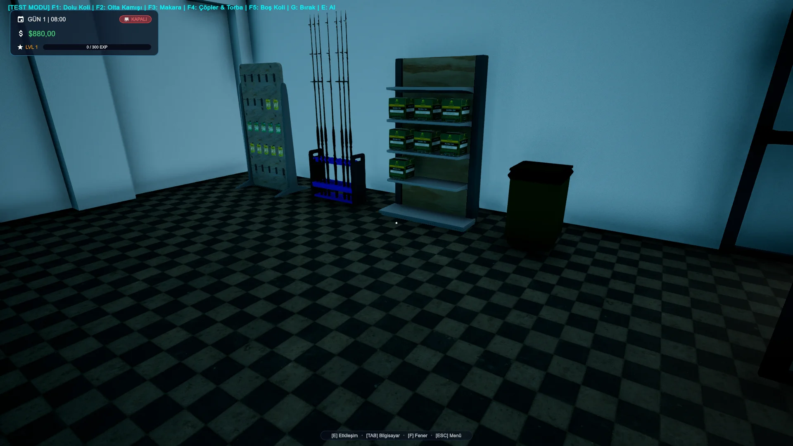
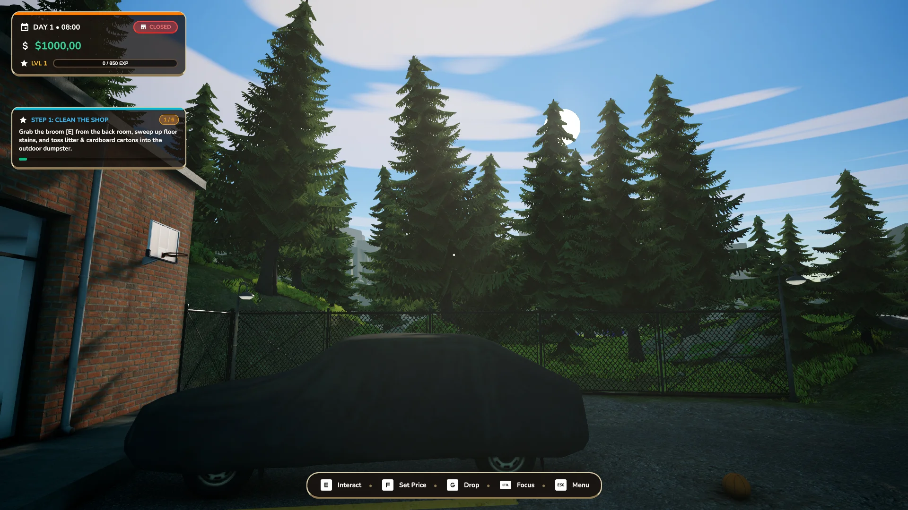
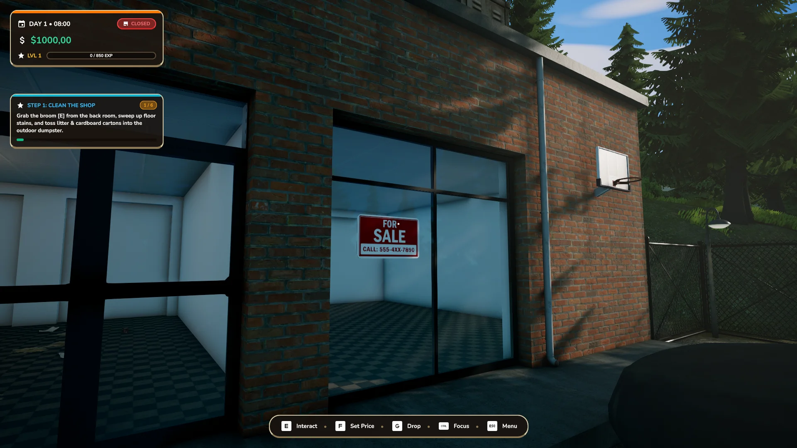
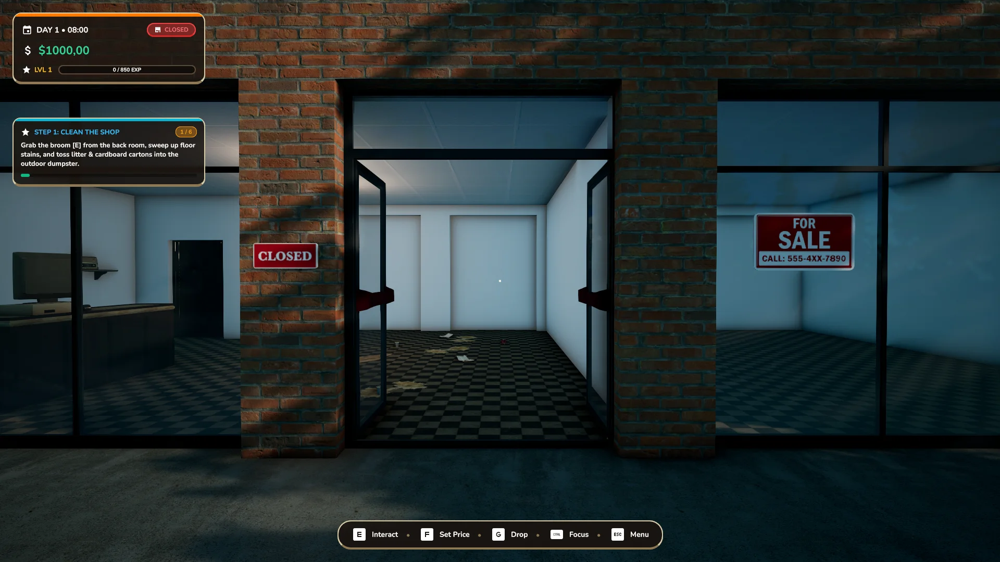
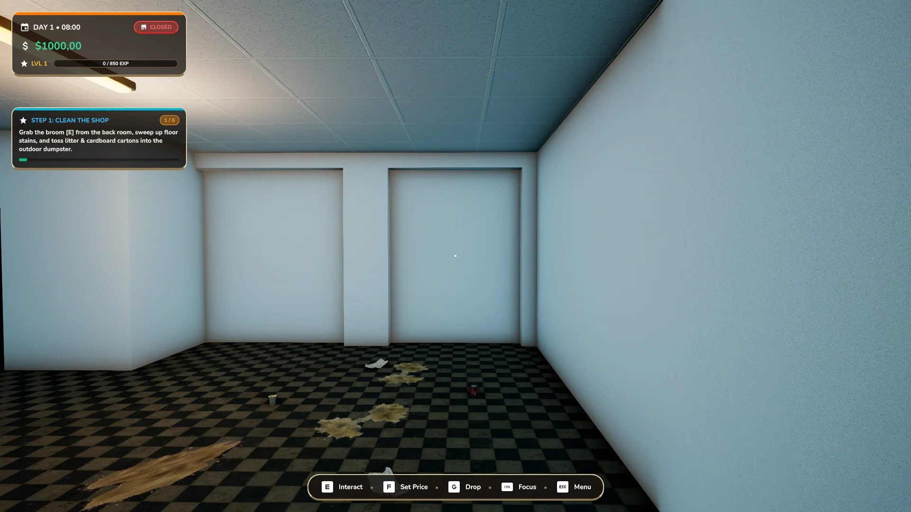
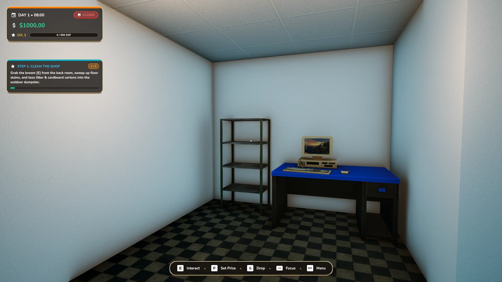
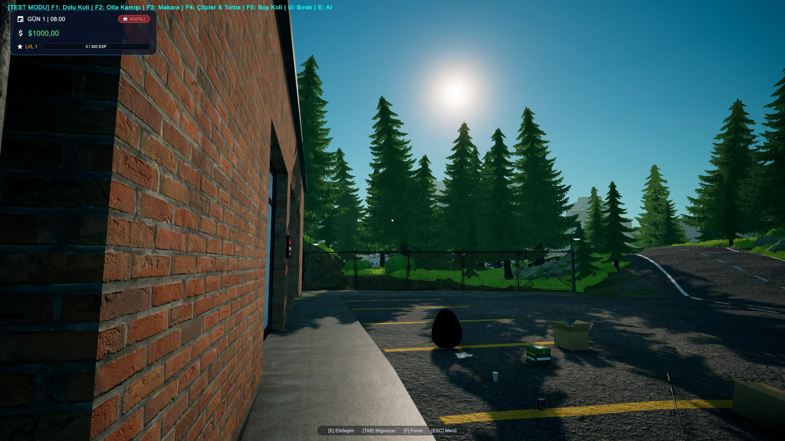

Oyunun başından beri düzenli olarak ışıklar konusunda ilerleme kaydetmeye çalışıyorum ancak iç mekan ışıklandırması bir türlü tatmin etmiyordu. Rakip oyunlarda gördüğüm aydınlık iç mekanların yanında bizim oyun inanılmaz soğuk ve cansız duruyordu. Mixed Lighting, yoğun ışıklar vb. bir sürü çözüm denedim ama nedense Local Volume kullanmayı inatla reddetmiştim. Geliştirici arkadaşlarım ve diğer oyunların bu mekanikten yararlandığını görünce ben de kullanmak istedim. Sonuçtan pek ümitli değildim ancak inanılmaz tatmin etti, hiç bu kadar iyi olacağını düşünmemiştim. Aslında beni mutsuz eden bu eksiklik başucumdaymış fakat ben kaçıyormuşum.


AO ve God Rays'e gelecek olursak... Onları da "eklemek için" eklemiştim; elimde var, güzelleştirir diye düşünmüştüm. O da ne, aman Allah'ım! İnanılmaz estetik bir hava kattı. God Rays sis yoğunluğunu da Local Volume ile adapte çalıştırdım ve harika bir sonuç elde ettim. Unutmadan söyleyeyim, Reflection Probe da kullandım; onun da tatlı bir etkisi oldu.
Bu sistemi kesinlikle ilerideki oyunlarımda uygulamayı düşünüyorum. Gerçekten inanılmaz hızlı ve güzel sonuçlar verdi.
Geliştirme Sürecinden Kareler ve İnceleme
Tüm ışıklandırma testleri, cam yansımaları ve karşılaştırma kareleri (Büyütmek için görsellere tıklayabilirsiniz):





